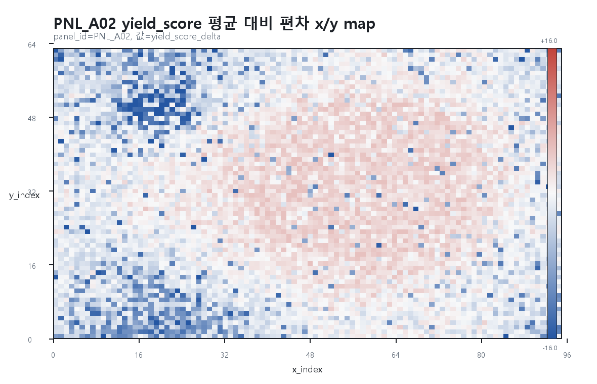
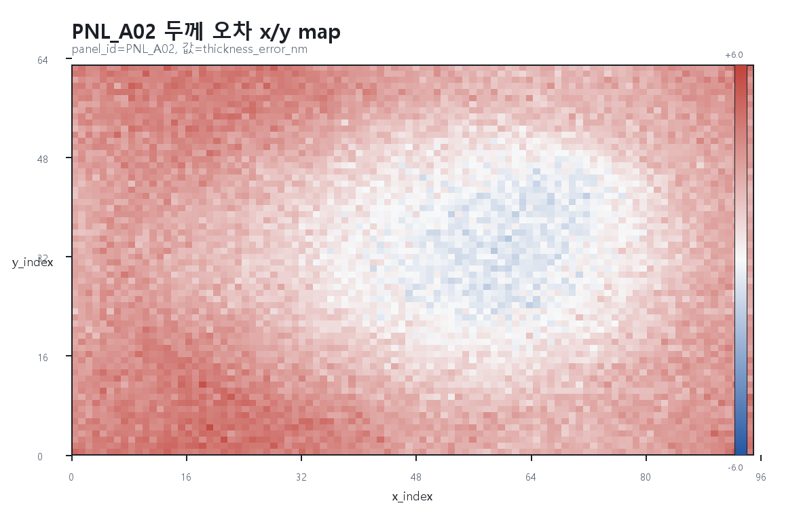
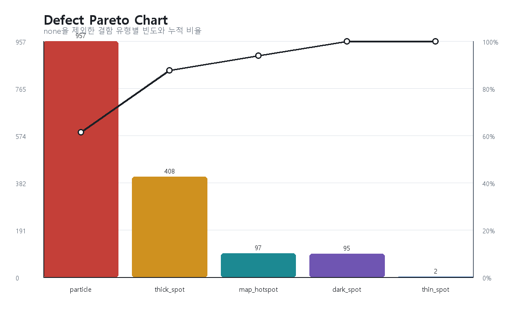
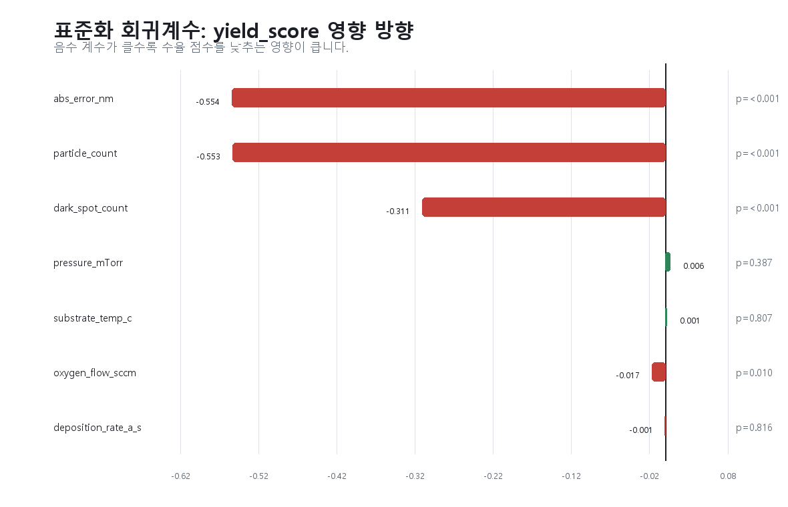

1. 분석 목적
고급 모범답안은 Antigravity IDE에서 raw CSV를 직접 읽고, 그래프를 확인하면서 원인 후보를 점차 좁히는 흐름을 문서화한다. Quarto 제출의 기준 파일은 oled_deposition_report.qmd이다.
2. 데이터 구조 확인
좌표형 데이터이므로 panel, x/y 위치, chamber, zone을 먼저 확인해야 한다. 수율 저하를 설명할 수 있는 측정 컬럼은 두께 오차, particle, dark spot, 전기/광학 특성, 공정 조건이다.
| mean | std | min | max | |
|---|---|---|---|---|
| panel_id | ||||
| PNL_A01 | 96.436 | 2.791 | 78.008 | 100.000 |
| PNL_A02 | 94.167 | 4.321 | 66.952 | 100.000 |
| PNL_B01 | 95.929 | 3.218 | 71.738 | 100.000 |
| PNL_B02 | 93.885 | 4.371 | 73.823 | 100.000 |
3. 위치 패턴 분석

PNL_A02는 평균 수율이 낮고 edge 영역에 저수율 hotspot이 관찰된다. 이 패턴은 단순 랜덤 결함보다 위치 의존 원인, 예를 들어 edge gas flow, shadow mask 정렬, edge 온도 균일도 문제와 더 잘 맞는다.

같은 panel에서 두께 오차도 hotspot과 맞물린다. 저수율 영역이 두께 오차와 결함 count 모두에 반응하는지 추가 확인해야 한다.
4. Pareto와 회귀분석

결함 개선은 particle부터 시작하는 것이 합리적이다. 단, thick_spot과 map_hotspot은 두께 오차와 위치 패턴에 연결될 수 있어 chamber 보정과 함께 본다.

표준화 회귀계수 기준으로 yield_score를 가장 크게 낮추는 변수는 abs_error_nm, particle_count, dark_spot_count다. pressure와 substrate 온도는 이 모델에서 유의하지 않아 직접 원인이라기보다 chamber/두께/결함과 동반되는 조건일 가능성이 높다.
OLS 결과
| term | coef | t_approx | p_norm_approx |
|---|---|---|---|
| intercept | 0.000 | 0.000 | 1.000 |
| abs_error_nm | -0.554 | -198.930 | <0.001 |
| particle_count | -0.553 | -210.600 | <0.001 |
| dark_spot_count | -0.311 | -119.160 | <0.001 |
| pressure_mTorr | 0.006 | 0.860 | 0.387 |
| substrate_temp_c | 0.001 | 0.240 | 0.807 |
| oxygen_flow_sccm | -0.017 | -2.570 | 0.010 |
| deposition_rate_a_s | -0.001 | -0.230 | 0.816 |
5. 저수율 좌표 Top 10
| panel_id | chamber | x_index | y_index | zone | thickness_error_nm | particle_count | dark_spot_count | defect_type | yield_score |
|---|---|---|---|---|---|---|---|---|---|
| PNL_A02 | C2 | 14 | 48 | edge | 4.138 | 3 | 3 | dark_spot | 66.952 |
| PNL_A02 | C2 | 19 | 49 | edge | 4.527 | 6 | 1 | particle | 67.587 |
| PNL_A02 | C2 | 24 | 58 | edge | 4.242 | 4 | 2 | dark_spot | 68.455 |
| PNL_A02 | C2 | 20 | 53 | edge | 3.726 | 4 | 2 | dark_spot | 68.769 |
| PNL_A02 | C2 | 22 | 52 | edge | 2.697 | 6 | 1 | particle | 70.321 |
| PNL_A02 | C2 | 16 | 49 | edge | 3.943 | 4 | 1 | particle | 71.008 |
| PNL_B01 | C3 | 54 | 21 | center | -2.386 | 2 | 3 | dark_spot | 71.738 |
| PNL_A02 | C2 | 26 | 24 | middle | 2.366 | 1 | 3 | dark_spot | 72.473 |
| PNL_A02 | C2 | 15 | 51 | edge | 3.806 | 4 | 1 | particle | 73.246 |
| PNL_A02 | C2 | 22 | 50 | edge | 3.672 | 5 | 0 | particle | 73.530 |
6. 최종 원인 후보
- C2/C4 chamber의 over-deposition 경향과 edge 영역 두께 균일도 저하
- particle 결함의 우선순위가 높고 수율과 강한 음의 관계를 보임
- PNL_A02 edge hotspot은 위치 의존성이 있으므로 mask 정렬, edge flow, substrate support 상태 점검 필요